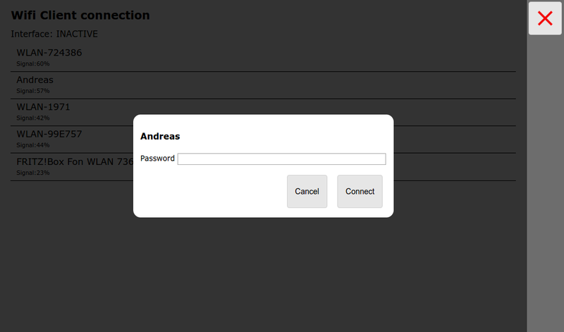

- not on android -
From the status page you get here using
the  button.
button.

This page will only be shown if the wifi client handling is configured and a wifi adapter is plugged into the correct USB port.

In the picture a Raspberry Pi 3 is shown, For newer ones with blue USB3.0 sockets you must connect to the blue socket that is closed to the pcb.
On the OS level on the pi a network interface "wlan-av1" must be shown. In the configuration (avnav_server.xml) an entry
must exist.
On the page all wifi networks in range and the configured networks are
shown.
By clicking on an entry you can connect to this network.

If you would like to allow an access from this network to your rasp you must switch on "external access".
Warning: Never enable external access in a public wifi network! There
is no protection in AvNav and anybody within the same network could
access your system.
But you can use it if you e.g. use an own LTE router and would like to
allow your devices connected to this router to access AvNav.
If the connection has been established it will be shown and the network will have a grey background in the lsist.

During connection set up some status information will be visible close to "Interface".
If you would like to disconnect you can click again on the network and can disable it or remove it from the configuration completely.

All the wifi information is stored in the file /etc/wpa_supplicant/wpa_supplicant.conf.